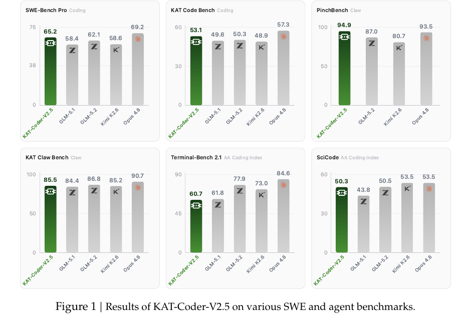
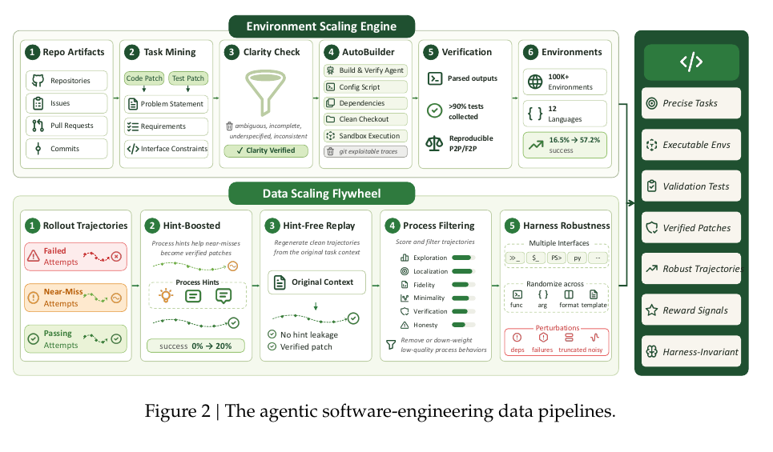
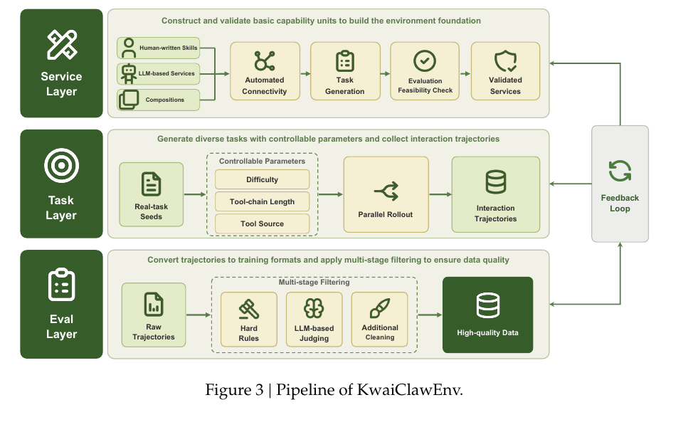
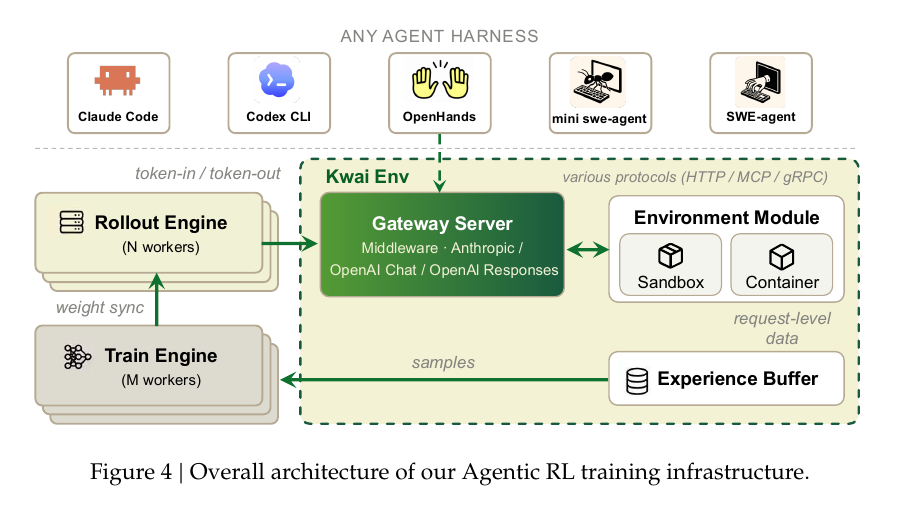
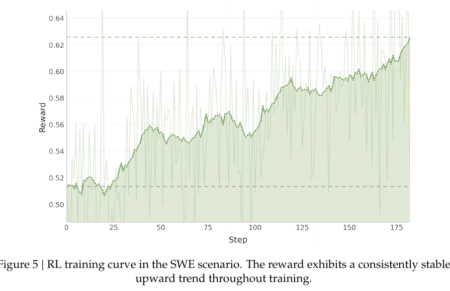
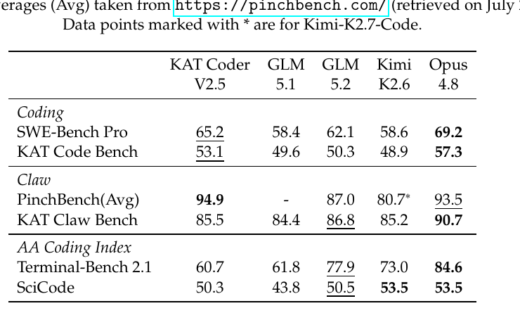

TECHNICAL REPORT · AGENTIC CODING · 2026-07
真正的瓶颈不在参数，而在可验证的训练世界
KAT-Coder-V2.5 把编码 Agent 的能力拆成环境、轨迹、奖励与专家融合四个系统问题；这份解读追踪它如何把“会写代码”变成“能在真实仓库里完成并验证一项工作”。
中文深读 · 基于 KAT-Coder-V2.5 Technical Report（arXiv:2607.05471v1）
READING ROUTE
技术报告审读
先看系统如何制造可验证的训练世界，再看 RL 如何消费这些信号，最后审计成绩到底证明了什么。
01 编码 Agent 的难点，藏在模型之外02 AutoBuilder：先把任务变成可验证的三元组03 KwaiClawEnv：把工具调用变成可扩展的闭环04 把 harness 当作分布，把 sandbox 当作学习信号05 MOPD：在学生自己的轨迹上融合五位教师06 成绩很强，但它证明的是“能力剖面”而非完整因果链07 下一步该验证什么？
这份报告最值得读的地方，不是又一个“更大的代码模型”，而是它把编码 Agent 的失败重新归因：如果仓库不能稳定运行、奖励不能区分好坏过程、轨迹不能覆盖真实工作流，参数规模就很难转化为可部署能力。
KAT-Coder-V2.5 的系统回答是一个端到端的后训练闭环：AutoBuilder 从真实仓库构造可复现环境，KwaiClawEnv 从可执行服务合成工具轨迹，harness randomization 把接口变化纳入训练分布，hindsight critic 与过程奖励把长程任务的稀疏反馈拆细，最后用 Multi-Teacher On-Policy Distillation 把五类专家放回同一个学生策略。
我的阅读判断是：报告展示了一个有说服力的工程方向，但没有通过组件级消融证明每个模块对最终成绩的独立贡献。读者应把“论文声称的系统能力”和“六个基准上的相对排名”当成两层证据，而不是一条已经闭合的因果链。
让模型学会解决任务，而不是学会适应某一个 harness。论文 §4.1 的设计张力；中文转述
来源档案
KAT-Coder-V2.5 Technical Report
KwaiKAT Team（Bo Huang 等 53 位作者） · 提交于 2026-07-06 · arXiv:2607.05471v1 · 原文与 PDF · 24 页，5 张方法/结果图
第一章 · 重新定义问题
编码 Agent 的难点，藏在模型之外
报告把 coding agent 与单轮代码生成区分开：它必须理解自然语言需求，在跨文件仓库中定位逻辑，编辑代码，运行测试，并在失败后继续恢复（§1, pp.1–2）。因此能力瓶颈不只是“生成了多少正确 token”，还包括仓库理解、工具使用、长程规划、工程纪律和可验证修复。
BOTTLENECK
环境不可复现
依赖、构建系统与测试框架差异会让一个看似成功的 rollout 根本没有执行目标测试。
SIGNAL
只看最终 pass 不够
通过测试的轨迹可能硬编码或绕过机制；失败轨迹也可能已经完成了有效定位与诊断。
RL
长程反馈会失真
稀疏奖励、固定 harness 过拟合和环境噪声共同放大信用分配与训练稳定性问题。

图 A KAT-Coder-V2.5 报告 Fig.1（p.1）：六项成绩先给出能力剖面——PinchBench 以 94.9 领先，SWE-Bench Pro 与 KAT Code Bench 分列第二；但 Terminal-Bench 2.1 与 SciCode 仍落后于更通用的 Opus/GLM/Kimi。
阅读钥匙 把后文看成一条“信号制造链”：环境决定能否验证，轨迹决定学到什么，奖励决定偏好什么，蒸馏决定这些能力能否共存。
第二章 · 环境与数据
AutoBuilder：先把任务变成可验证的三元组
AutoBuilder 的关键抽象不是“收集更多 issue”，而是把一个 SWE 样本固定为三元组：精确任务描述、可执行仓库环境、验证测试（§2.1, pp.3–4）。任务描述又拆成 problem statement、requirements、interface constraints：分别从 golden patch、test patch 以及两者共同推断。这样，模型训练面对的是自洽的可执行要求，而不是常常模糊或与最终合并改动错位的 issue 文本。
可验证任务的判定
这里的 Δ 是 Agent 产出的 patch；fail-to-pass 检查目标缺陷被修复，pass-to-pass 检查既有行为没有回归。论文把两者同时作为正确性的门槛，而不是只看命令退出码或表面日志（§2.1, p.4）。

图 B KAT-Coder-V2.5 报告 Fig.2（p.3）：上半段把仓库材料加工成可执行环境，下半段把失败、近失与通过轨迹加工成更稳健的训练信号；两条流水线最后汇合到 harness-invariant 的轨迹。
0% → ~20%
提示恢复后的近失 pass rate
数据飞轮的微妙处在于：提示（hint）只作为临时脚手架，验证 patch 后再从原始上下文重放一条无 hint 轨迹，过滤掉提示泄漏。过程评分还会检查探索、定位、规格匹配、最小性、验证与诚实性，压低“测试过了但过程不可取”的样本（§2.2, p.4）。
证据强度：环境数量、成功率和近失恢复比例都是作者报告的内部统计；文中没有给出对应数据集清单、抽样方差或外部复现实验。
第三章 · 通用 Agent 数据
KwaiClawEnv：把工具调用变成可扩展的闭环
SWE 之外，报告需要覆盖写作、数据分析、监控和业务自动化等多工具工作流。KwaiClawEnv 用 Service、Task、Eval 三层结构解决三个问题：先构造可执行能力，再从真实任务种子派生任务与轨迹，最后用硬规则与 LLM-as-Judge 过滤并把质量信号反馈回前两层（§3.1–§3.2, pp.5–8）。

图 C KAT-Coder-V2.5 报告 Fig.3（p.6）：Service 层负责能力与连接性，Task 层控制难度、工具链长度并并行 rollout，Eval 层把轨迹转为训练格式后做多阶段过滤；右侧反馈环说明它不是一次性数据生成器。
任务复杂度的可控旋钮
论文没有把 g 写成单一闭式目标，而是把 difficulty、tool-chain length、tool source 作为可配置参数。报告称平均轨迹约 15 次工具调用，最长超过 100 步，并在多阶段验证后保留 10 万级高质量实例（§3.3, p.8）。
SERVICE
从 Skill 到可执行服务
解析 API、参数 schema 与约束，补齐 OpenAPI、容器配置和 fixture data；论文声称基础生成成功率超过 90%。
TASK
从真实种子派生变体
通过参数扩展、约束增强和工具链编排扩大覆盖，同时保持成功条件可机器验证。
EVAL
先硬规则，再模型评审
检查黑名单工具、文件存在性、工具覆盖和状态一致性，再按语义正确性、效率、交互自然度打分。
系统含义 KwaiClawEnv 的真正产物不是“更多任务”，而是带状态、工具和验证器的训练世界；这也是它比纯 LLM 模拟环境更可信、比手写 sandbox 更可扩展的理由。
第四章 · 长程 RL
把 harness 当作分布，把 sandbox 当作学习信号
报告把固定 harness 视为一种隐性捷径：模型可能学会固定的调用格式、上下文拼接顺序或反思时机，而不是任务本身。于是 RL rollout 同时使用 white-box 的 mini-swe-agent 与接近部署分布的 black-box harness（Claude Code、Codex、OpenHands、OpenClaw 等），沿工具协议、上下文管理、控制流三个轴做随机化（§4.1, pp.9–10）。

图 D KAT-Coder-V2.5 报告 Fig.4（p.10）：Gateway Server 把任意 harness 与 Train Engine 解耦，轨迹进入 Experience Buffer 后再采样更新；这让 harness 可以作为黑盒挂载，也便于在 /generate 端点避免重新 tokenize 带来的 token drift。
带 hindsight 的 PPO critic
Actor 在 rollout 时只看正常 harness state s_t；训练时 Critic 额外读取 hindsight context c_t，例如最终 pass/fail、测试分布、patch 差异与后续 turns。它只改善 value estimation，不把部署时不可见的信息泄漏给 Actor（§4.3.2, pp.12–13）。
奖励也按三层组织：Core Task Score 要求 fail-to-pass 与 pass-to-pass 全部通过；行为约束惩罚重复文本、错误 tool call、异常位置、并发过量和调试残留；失败轨迹则用文件搜索 F2 与 unit-test pass rate 提供部分进度信号（§4.4, pp.13–15）。这是一种把“最终正确”和“过程可取”并置的训练偏好。

图 E KAT-Coder-V2.5 报告 Fig.5（p.11）：论文展示约 180 step 的奖励上升曲线，并据此声称训练稳定；它能支持“这次训练没有明显崩溃”，但不能单独证明每个 reward 组件都有效。
~40%
约 200-turn 样本的 token drift（早期观察）
16% → <2%
sandbox feedback error rate
6–7% → <1%
timeout / verifier error 类别
这些数字说明环境可靠性会直接污染 reward，但它们仍是内部 audit 的前后对比；报告没有公开抽样规模、置信区间或不同错误类别的完整分解。
第五章 · 能力融合
MOPD：在学生自己的轨迹上融合五位教师
五类专家分别覆盖 agentic SWE、通用工具使用、terminal、web coding 与 general knowledge。参数平均、Task Arithmetic 或顺序 SFT 容易产生 see-saw effect；MOPD 选择在 function space 做融合：学生先按自己的策略生成轨迹，再由对应领域教师在同一前缀上给 token-level 监督（§5, pp.15–16）。
Multi-Teacher On-Policy Distillation
反向 KL 具有 mode-seeking 倾向，把学生概率质量收拢到领域教师的高置信区域。w_t 由 student/teacher 的 top-k overlap 决定：prefix 漂移后降低权重，连续 m 个 token 不兼容则截断反传（§5.1, p.16）。
COLD START
先用教师轨迹预对齐
off-policy cold start 减少学生一开始就偏离教师分布，避免长上下文蒸馏的早期震荡。
DRIFT
漂移感知的动态截断
top-k overlap 低时停止把不可靠的教师条件分布当成监督，节省计算并降低错误 mode collapse。
TRADE-OFF
稳定性换来监督覆盖边界
截断会减少长轨迹后段的梯度；论文通过长度分层 batching 缓解偏差，但没有给出完整的消融量化。
我的推断 MOPD 的重要性不在“教师更多”，而在它承认 long-context on-policy supervision 会自我破坏，并把可靠性本身做成了训练控制量。
第六章 · 证据审计
成绩很强，但它证明的是“能力剖面”而非完整因果链
评测统一使用 Claude Code harness，并固定工具集、上下文预算、执行环境和 decoding 配置（§6, p.17）。这让跨模型比较更干净，但也意味着结果主要回答“在这套评测协议下谁更强”，不能自动回答“哪一个后训练组件带来了提升”。
证据维度 KAT-Coder-V2.5 最强对手 应如何解读
SWE-Bench Pro 65.2 Opus 4.8 · 69.2 第二名；支持近前沿仓库级修复能力 KAT Code Bench 53.1 Opus 4.8 · 57.3 第二名；内部真实工程任务上的相对优势 PinchBench Avg 94.9 Opus 4.8 · 93.5 报告称第一名；工具使用的亮点证据 KAT Claw Bench 85.5 Opus 4.8 · 90.7 接近但不是第一；业务工作流仍有差距 Terminal-Bench 2.1 60.7 Opus 4.8 · 84.6 明显落后；说明能力不是全面领先 SciCode 50.3 Kimi/Opus · 53.5 接近但未领先；更通用的科学编码仍是短板

表 A KAT-Coder-V2.5 报告 Table 4（p.19）：模型在 Claw / Coding 两类目标任务上占优，但在 AA Coding Index 的 Terminal-Bench 2.1 明显落后；这张表比“全面超越”更准确地画出了优化预算的落点。
最重要的限制是可归因性：报告没有展示 AutoBuilder、KwaiClawEnv、harness randomization、asymmetric PPO、过程奖励和 MOPD 的系统级 ablation，也没有公开模型规模、预训练数据、训练算力与内部 benchmark 的完整任务分布。因此，论文的强结论应写成“这套组合在六个协议上取得了这样的成绩”，而不是“每个模块都被证明不可替代”。
SUPPORTED
统一协议下的相对排名
Table 4 直接支持 PinchBench 第一、SWE-Bench Pro/KAT Code Bench 第二、Terminal-Bench 2.1 落后的能力剖面。
CLAIMED
环境与轨迹质量是主瓶颈
这是贯穿摘要、引言与结论的系统论点，配有内部规模与错误率统计，但缺少外部或组件级验证。
UNKNOWN
部署成本与迁移边界
服务侧延迟、容器成本、不同 harness 的单独泛化、以及内部 benchmark 与真实线上任务的相关性仍未充分披露。
第七章 · 开放问题
下一步该验证什么？
如果只能做一个消融，应该做什么？
固定模型与数据预算，逐项移除环境验证、过程过滤、harness 随机化、hindsight critic 与 MOPD，并在同一 Claude Code 协议和外部 benchmark 上报告均值与方差。这样才能把系统叙事拆成可归因的增益。
为什么 Terminal-Bench 2.1 差距这么大？
报告只给出能力剖面，没有进一步诊断。一个合理但未被证明的假设是：训练预算集中在仓库修复与多工具业务流，导致更广泛的 terminal / scientific coding 覆盖不足。
过程奖励会不会把工程风格变成硬约束？
可能会。文件搜索 F2、并行调用、调试清理和“最小 patch”等指标有助于规范行为，也可能惩罚合法但不同的探索策略；需要跨项目、跨 harness 的误伤率分析。
这篇报告改变了什么阅读视角？
它提醒我们把 agent 训练当成一个可观测系统：环境的可验证性、轨迹的可审计性和奖励的可靠性，和模型结构本身一样决定最终能力。
更大的图景：当 Agent 进入真实仓库与业务工具，训练数据不再是静态文本集合，而是一组会运行、会失败、会回馈的世界。下一代方法的竞争，很可能发生在谁能更便宜、更诚实地制造这些世界。综合解读；不是论文原话
原始来源：KAT-Coder-V2.5 Technical Report，arXiv:2607.05471v1，2026-07-06。本文中的数字与图表均回指论文的章节、页码或 Table/Figure；“我的推断”“未知”“尚未证明”等措辞用于标出综合判断与证据边界。